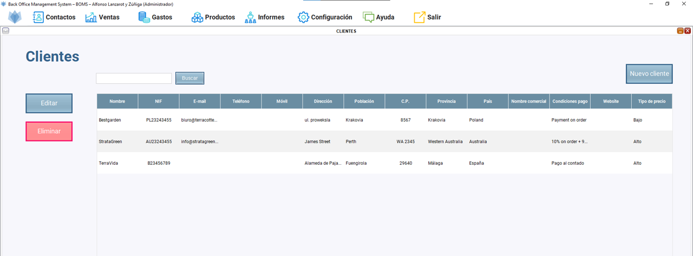
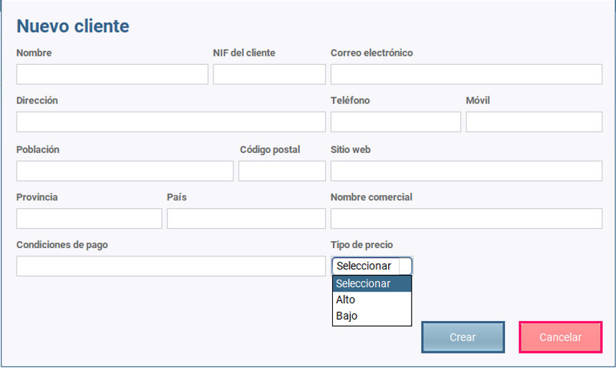
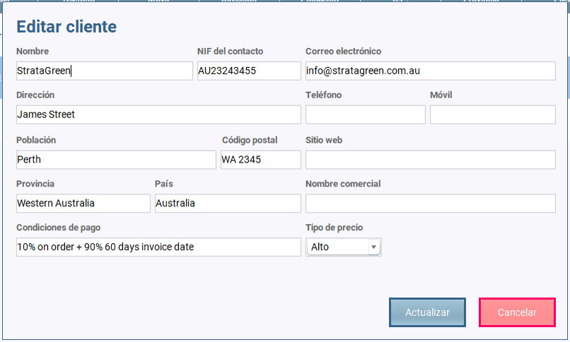
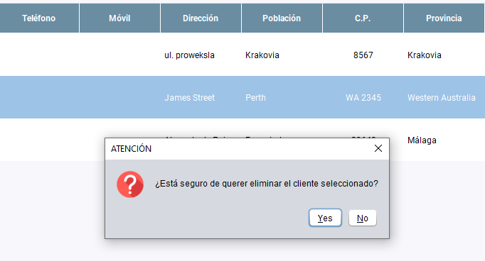
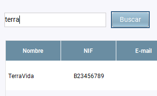

Una vez que hacemos clic en Contactos/Clientes se abre el escritorio de clientes.
Podemos observar una tabla con todos los clientes creados y tres botones: uno para añadir más clientes, uno para editarlos y otro para eliminarlos.

El botón "NUEVO CLIENTE" hace que se abra un diálogo en el que insertaremos la información relevante del cliente. Es necesario añadir al menos:

El botón "EDITAR" hace que se abra un diálogo en el que añadiremos nueva información del cliente o modificaremos lo que sea necesario.
Para ello antes es necesario seleccionar la fila en la que se encuentra el cliente que queremos editar.

El botón "ELIMINAR" hace que se elimine el cliente seleccionado de la tabla previa advertencia de seguridad por si finalmente no queremos hacerlo.
Para ello antes es necesario seleccionar la fila en la que se encuentra el cliente que queremos eliminar.

El botón "BUSCAR" nos permite buscar los clientes que están en la base de datos. La búsqueda podemos hacerla:
Únicamente es necesario introducir algunos caracteres y pulsar en el botón "BUSCAR" para que lo encuentre sin problemas.
